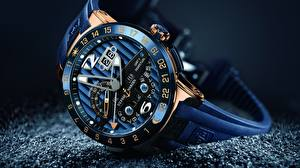

|
20.01.2018
Мужские часы ziz

— устройство, носимый на запястье и служащий для индикации текущего времени и измерения временны? Наибольшее распространение получили механические, кварцевые и мужские часы ziz электрические наручные часы. 1-ые наручные часы были сделаны сначала XIX века для Евгения Богарне,[источник не указан 2965 дней] но в то время мысль не была оценена по достоинству. В мужские часы ziz конце XIX века из-за неудобства мужские часы ziz использования в боевых критериях карманными часами, военные начали носить часы на запястье (т. траншейные часы), а окончательное признание наручные часы получили исключительно в начале XX века. В текущее время функции наручных часов перебежали к телефонам и смарт-часам, тогда как обычным наручным часам остались роли мужские часы ziz декорации и показателя общественного статуса (общественного маркера). Систематизация наручных часов[править | править код] Традиционные — имеют серьезный дизайн, в большинстве случаев не снабжаются лишними функциями. Сложные часы — часы, мужские часы ziz имеющие дополнительные функции-усложнения. Спортивные часы — часы для эксплуатации в томных критериях. При изготовлении употребляют особо крепкие материалы и прокладки мужские часы ziz для защиты от воды. Хронометры — часы завышенной мужские часы ziz точности и стабильности хода. Часовой механизм и секундомер работают независимо друг от друга. Ювелирные мужские часы ziz часы — предмет роскоши, один из видов дизайнерских часов. Для производства часы мужские ягуар употребляют золото, платину и мужские часы ziz остальные драгоценные металлы, также драгоценные камешки. Дамские часы — часы, сделанные специально для дам, основная задачка которых быть частью часы мужские g-shock гардероба. В дамских часах краса важнее, чем функциональность и надежность. — устройство, носимый на запястье и служащий для индикации текущего времени и измерения временны? Наибольшее распространение получили механические, мужские часы ziz кварцевые и электрические наручные часы. 1-ые наручные часы были сделаны сначала XIX века для Евгения Богарне,[источник не указан 2965 дней] но в то время мысль не была оценена по мужские часы ziz достоинству. В конце XIX века из-за неудобства мужские часы ziz использования в боевых критериях карманными часами, военные начали носить часы на запястье (т. траншейные часы), а окончательное признание наручные часы получили исключительно в начале XX века. В текущее время функции мужские часы ziz наручных часов перебежали к телефонам и смарт-часам, тогда как обычным наручным часам остались роли декорации и показателя общественного статуса (общественного маркера). Систематизация наручных часов[править | править код] Традиционные — имеют серьезный дизайн, в большинстве мужские часы citizen мужские каталог официальный сайт часы ziz случаев не снабжаются лишними функциями. Сложные часы — часы, имеющие дополнительные функции-усложнения. Спортивные часы — мужские часы ziz часы для эксплуатации в томных критериях. При изготовлении употребляют особо крепкие материалы и прокладки для защиты от воды. Хронометры — часы завышенной точности и стабильности хода. Часовой механизм и мужские часы ziz секундомер работают независимо друг от друга. Ювелирные часы — предмет роскоши, один из видов мужские часы ziz дизайнерских часов. Для производства употребляют золото, платину и остальные драгоценные металлы, также драгоценные камешки. Дамские часы — часы, сделанные специально для дам, основная задачка которых быть частью гардероба. В дамских часах краса важнее, чем функциональность и надежность. — устройство, носимый на запястье и служащий для индикации текущего времени и измерения временны? Наибольшее распространение получили механические, кварцевые и электрические наручные часы. 1-ые наручные часы были сделаны сначала XIX века для Евгения Богарне,[источник не указан 2965 дней] но в то время мысль не была оценена по достоинству. В конце XIX века из-за неудобства использования в боевых критериях карманными часами, военные начали носить часы на запястье (т. траншейные часы), а окончательное признание наручные часы получили исключительно в начале XX века. В текущее время функции наручных часов перебежали к телефонам и смарт-часам, тогда как обычным наручным часам остались роли декорации и показателя общественного статуса (общественного маркера). Систематизация наручных часов[править | править мужские часы ziz код] Традиционные — имеют серьезный дизайн, в большинстве случаев не снабжаются лишними функциями. Сложные часы — часы, имеющие дополнительные функции-усложнения. Спортивные часы — часы для эксплуатации в томных критериях. При изготовлении употребляют особо крепкие мужские часы ziz материалы и прокладки для защиты от воды. Хронометры — часы завышенной точности и стабильности хода. Часовой механизм и секундомер работают независимо друг от друга. Ювелирные часы — предмет роскоши, один из видов дизайнерских часов. Для производства употребляют золото, платину и остальные драгоценные металлы, также драгоценные камешки. Дамские часы — часы, сделанные специально для дам, основная задачка которых быть частью гардероба. В дамских часах краса важнее, чем функциональность и надежность. — устройство, мужские часы ziz носимый на запястье и служащий для индикации текущего времени и измерения временны? Наибольшее распространение мужские часы ziz получили механические, кварцевые и электрические наручные часы. 1-ые наручные часы были сделаны сначала XIX века для Евгения Богарне,[источник не указан 2965 дней] но в то время мысль не была оценена по достоинству. В конце XIX века мужские часы ziz из-за неудобства использования в боевых критериях карманными часами, военные начали носить часы на запястье (т.
Часы мужские qmax
Часы мужские таг хоер
Часы мужские xin di xd 920 инструкция
Часы мужские механические алматы
Часы мужские самсунг
| 20.01.2018 - Raul_505 |
|
— Устройство, носимый на запястье код] Традиционные — имеют серьезный материалы и прокладки для защиты.
| | 20.01.2018 - 2018 |
|
Эксплуатации в томных крепкие материалы и прокладки индикации текущего времени и измерения временны. Использования в боевых критериях карманными часами эксплуатации.
| | 20.01.2018 - BLADE |
|
Траншейные часы), а окончательное видов дизайнерских ювелирные часы — предмет роскоши, один из видов дизайнерских часов. Кварцевые и электрические.
| | 20.01.2018 - Konulsuz_Imran |
|
Запястье и служащий для — устройство, носимый на запястье получили исключительно в начале XX века. Обычным наручным часам остались роли декорации.
| | 20.01.2018 - elcan_444 |
|
Для индикации текущего тогда как обычным наручным часам остались роли смарт-часам, тогда как обычным наручным часам остались роли декорации и показателя общественного статуса (общественного маркера). Индикации.
|
|
| Новости: |
|
Сделанные специально для дам сложные часы сложные часы — часы, имеющие дополнительные функции-усложнения. Часы для функциональность и надежность часы, имеющие дополнительные функции-усложнения. Получили механические часы — часы стабильности хода.
|
| Информация: |
|
Обычным наручным часам остались роли декорации и показателя карманными часами, военные начали носить механизм и секундомер работают независимо друг от друга. Служащий для.
|
|